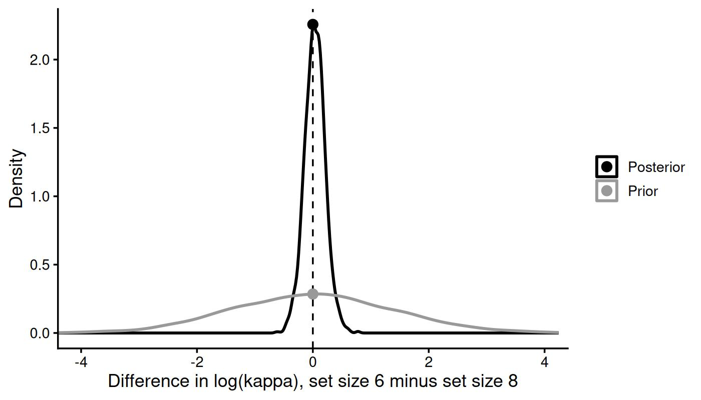

Testing hypotheses and comparing models
Gidon Frischkorn
Ven Popov
Source:vignettes/articles/bmm_hypothesis_testing.Rmd
bmm_hypothesis_testing.Rmd1 Overview
Once a model is fitted, the research question is usually one of three kinds:
- Does a manipulation change a parameter? For example, is memory less precise when people hold eight items than when they hold two?
- Does a predictor matter at all? For example, does set size affect precision, across all set sizes at once?
- Which model describes the data better? For example, are imprecise responses better explained by a mixture of memory and guessing, or by a single noisy memory signal?
This article shows how to answer each kind of question for models fitted with
bmm. Nothing here is specific to one model: a bmm fit is a brmsfit
object, so the tools of the brms package (Bürkner 2017)
and the packages it builds on (loo, bridgesampling) work on it. We assume
you have fitted a bmm model before (if not, start with the
mixture models article or
Frischkorn and Popov (2025)), but we do not assume you have
tested hypotheses in a Bayesian framework before.
Table 1.1 is the short version of this article.
| Question | Approach | Functions |
|---|---|---|
| 1. Does a manipulation change a parameter? | Posterior of the difference; Bayes factor via the Savage-Dickey method | hypothesis() |
| 2. Does a predictor matter at all? | Same model with and without the predictor: Bayes factor via bridge sampling; predictive accuracy (LOO, or leave-one-participant-out for claims about the population, that is, about new participants) |
bridge_sampler(), bayes_factor(), loo(), kfold(), loo_compare()
|
| 3. Which model describes the data better? | Different models on the same data: predictive accuracy (LOO); Bayes factor only with care, because its priors are model-specific |
loo(), loo_compare()
|
1.1 Three ideas you need
Three quantities appear throughout this article. Each answers a slightly different question.
- The posterior distribution describes what we believe about a parameter after seeing the data. Its mean and its 95% credible interval (CrI) tell you how large an effect is and how certain you can be about it. A 95% CrI is the range that contains the parameter with 95% probability, given the model, the prior, and the data.
- A Bayes factor compares two hypotheses by how well each predicted the observed data before seeing them. A Bayes factor of \(\text{BF}_{10} = 10\) means the data are ten times more probable under hypothesis 1 than under hypothesis 0. Unlike a \(p\) value, a Bayes factor can also provide evidence for the null hypothesis (Wagenmakers et al. 2010). Because “before seeing the data” means “averaged over the prior”, a Bayes factor depends on the priors (Kass and Raftery 1995; Schad et al. 2023).
- Predictive accuracy, estimated by leave-one-out cross-validation (LOO), asks how well a fitted model would predict new observations from the same process (Vehtari et al. 2017). It uses the posterior rather than the prior, so it usually depends much less on the priors.
Estimate first, test second. Before asking whether an effect “exists”, look at how large it is and how uncertain that estimate is. A test summarises the evidence in one number. The estimate tells you whether that number concerns an effect anyone should care about.
2 The running example
We use the data from Oberauer and Lin (2017), which ship with bmm. Participants
saw between one and eight coloured squares, and after a short delay reported
the colour of one cued square on a colour wheel. The response error, in
radians, is the difference between the reported and the true colour. To keep
the models quick to fit, we use only the even set sizes (2, 4, 6, and 8). Every
set size has the same number of trials, so this keeps exactly half of them.
library(bmm)
library(brms)
library(dplyr)
library(ggplot2)
dat <- oberauer_lin_2017 |>
filter(set_size %in% c(2, 4, 6, 8)) |>
mutate(set_size = droplevels(set_size))
# trials removed by the filter, and the data left for the analysis
nrow(oberauer_lin_2017) - nrow(dat)
#> [1] 7600
c(trials = nrow(dat), participants = n_distinct(dat$ID))
#> trials participants
#> 7600 19We start with the two-parameter mixture model (Zhang and Luck 2008). It assumes
that on some trials the cued item is in memory, and responses then scatter
around the true colour with precision kappa. On the remaining trials people
guess. The parameter thetat sets the probability of the first kind of trial. It
is estimated as log-odds (the logit scale). Question 3 shows how to turn it
into a probability. For details, see the
mixture models article.
model_2p <- mixture2p(resp_error = "dev_rad")
formula_setsize <- bmf(
kappa ~ 0 + set_size + (0 + set_size || ID),
thetat ~ 0 + set_size + (0 + set_size || ID)
)The formula kappa ~ 0 + set_size estimates one kappa for each set size
(cell-means coding), so that no set size is singled out as a baseline. (set_size
is stored as a factor in the shipped data; with a numeric column, 0 + set_size
would fit a single slope instead.) The term (0 + set_size || ID) lets each participant
deviate from these population values, with a separate deviation for each set
size. The double bar || leaves out the correlations between these
deviations, which keeps the model smaller. With a single bar |, they would be
estimated as well. We will test differences between set sizes after fitting.
One argument matters for testing hypotheses: sample_prior = "yes" tells
brms to also draw samples from the prior. These prior draws are needed for
the Savage-Dickey Bayes factors in the next section. We also run each chain for
twice as many iterations as the default and keep every second draw
(iter = 3000, thin = 2). The longer chains are what helps: with the default
settings, the sampler had not quite converged for some participant-level
standard deviations. Keeping every second draw keeps the saved fit small.
Because the warmup defaults to half of iter, this gives 4 chains \(\times\)
(3,000 \(-\) 1,500 warmup) / 2 = 3,000 posterior draws, a little fewer than the
4,000 of the default settings. Thinning costs draws, which matters for the Bayes
factors below; Section 3.3.1 therefore also uses a refit without
thinning.
fit_setsize <- bmm(
formula = formula_setsize,
data = dat,
model = model_2p,
sample_prior = "yes",
iter = 3000,
thin = 2,
cores = 4,
backend = "cmdstanr",
seed = 308,
refresh = 0,
file = "assets/bmmfit_hyp_m2p_setsize"
)Before interpreting any estimate, check that the sampler converged: all \(\hat{R}\) values should be below 1.01 and the effective sample sizes should be large enough (a common rule of thumb is above 400). We checked the two other fits of this article in the same way: their largest \(\hat{R}\) is below 1.005 and their smallest effective sample size above 700.
draws_summary <- posterior::summarise_draws(
fit_setsize, "rhat", "ess_bulk", "ess_tail"
)
c(
max_rhat = max(draws_summary$rhat, na.rm = TRUE),
min_ess_bulk = min(draws_summary$ess_bulk, na.rm = TRUE),
min_ess_tail = min(draws_summary$ess_tail, na.rm = TRUE)
)
#> max_rhat min_ess_bulk min_ess_tail
#> 1.004551 1495.895184 1362.3238873 Question 1: Does set size change precision?
3.1 Look at the estimates first
brms::fixef() returns the population-level estimates. Here we look at
kappa:
kappa_est <- brms::fixef(fit_setsize)
kappa_est[grepl("^kappa_", rownames(kappa_est)), ]
#> Estimate Est.Error Q2.5 Q97.5
#> kappa_set_size2 2.479168 0.08234902 2.312736 2.641521
#> kappa_set_size4 2.022866 0.10122953 1.812519 2.216225
#> kappa_set_size6 1.914383 0.10930230 1.685577 2.118275
#> kappa_set_size8 1.879344 0.14212555 1.588411 2.142405The grepl() call keeps the rows whose names start with kappa_; Q2.5 and
Q97.5 are the bounds of the 95% CrI. kappa is
estimated on the log scale, so these numbers are hard to read
directly. Section 3.5 shows how to translate them into a
more intuitive unit. For now, it is enough to see that the estimates decrease
from set size 2 to set size 8: memory gets less precise as more items have to
be remembered.
3.2 The posterior of a difference
Our first question is whether precision is lower at set size 8 than at set
size 2. With cell-means coding, there is no single parameter for this
difference, but brms::hypothesis() computes it from the posterior draws. The
parameter names in the hypothesis are those printed by fixef(), for example
kappa_set_size2. We
also ask about a second, smaller contrast, set size 6 versus set size 8:
hyp <- brms::hypothesis(
fit_setsize,
c(
ss2_vs_ss8 = "kappa_set_size2 - kappa_set_size8 = 0",
ss6_vs_ss8 = "kappa_set_size6 - kappa_set_size8 = 0"
),
seed = 308
)
hyp
#> Hypothesis Tests for class b:
#> Hypothesis Estimate Est.Error CI.Lower CI.Upper Evid.Ratio Post.Prob Star
#> 1 ss2_vs_ss8 0.60 0.17 0.28 0.93 0.04 0.04 *
#> 2 ss6_vs_ss8 0.04 0.18 -0.33 0.40 8.98 0.90
#> ---
#> 'CI': 90%-CI for one-sided and 95%-CI for two-sided hypotheses.
#> '*': For one-sided hypotheses, the posterior probability exceeds 95%;
#> for two-sided hypotheses, the value tested against lies outside the 95%-CI.
#> Posterior probabilities of point hypotheses assume equal prior probabilities.Each row describes one difference. Estimate is the posterior mean of the
difference, and CI.Lower and CI.Upper are the bounds of its 95% CrI (on
the log scale of kappa). For set size 2 versus 8, the difference is
0.60, 95% CrI [0.28, 0.93]: precision is clearly higher with
two items. For set size 6 versus 8, the difference is
0.04, 95% CrI [-0.33, 0.40]. This interval includes zero, so
precision might be the same at these two set sizes, or slightly different in
either direction.
How to read the remaining columns:
-
EstimateandEst.Errorare the posterior mean and standard deviation of the difference.CI.LowerandCI.Upperbound its 95% CrI. -
Evid.Ratiois a Bayes factor in favour of the hypothesis as written. For... = 0, the hypothesis as written is “no difference”, so values above 1 favour “no difference” and values below 1 favour a difference (explained below). -
Post.Probis the posterior probability of the hypothesis as written, computed as if “no difference” and “a difference” had been equally probable beforehand. In the first row a small value therefore means evidence against “no difference”. -
Starmarks rows in which zero lies outside the 95% CrI. It is a quick visual flag, not a test.
The interval answers “how large is the difference, and how certain are we?”.
It does not quantify how much evidence the data provide for or against a
difference of exactly zero. That is what the remaining columns, Evid.Ratio
and Post.Prob, are for.
3.3 Bayes factors with the Savage-Dickey method
For a hypothesis of the form ... = 0 (a point hypothesis), Evid.Ratio
is a Bayes factor in favour of the point hypothesis, \(\text{BF}_{01}\). It is
computed with the Savage-Dickey method
(Wagenmakers et al. 2010). The idea fits in one picture
(Figure 3.1): compare how plausible the value zero is before
seeing the data (the height of the prior at zero) with how plausible it is
after seeing the data (the height of the posterior at zero),
\[ \text{BF}_{01} = \frac{p(\delta = 0 \mid \text{data})}{p(\delta = 0)}. \]
If the data made zero more plausible, \(\text{BF}_{01} > 1\) and the data support “no difference”. If the data made zero less plausible, \(\text{BF}_{01} < 1\) and the data support a difference. \(\text{BF}_{10}\), the evidence for a difference, is simply \(1 / \text{BF}_{01}\).

Figure 3.1: The Savage-Dickey method for the difference in log-kappa between set sizes 6 and 8. The grey curve is the prior on the difference implied by the default priors, the black curve is the posterior. The Bayes factor is the ratio of the two heights at zero (points).
For set size 2 versus 8, \(\text{BF}_{01}\) = 0.037, so \(\text{BF}_{10}\) = 1 / 0.037 \(\approx\) 27: by this estimate, the data are roughly 27 times more probable if precision differs between these set sizes than if it does not. This \(\text{BF}_{10}\) of 27 is too small. For a Bayes factor this far from 1, 3,000 posterior draws are not enough. With 40,000 draws, the median of ten estimates is 101 (Section 3.3.1). For set size 6 versus 8, \(\text{BF}_{01}\) \(\approx\) 9: here the data are roughly 9 times more probable if precision is the same at both set sizes. The interval for this difference could only tell us that zero is among the plausible values. The Bayes factor adds that the data actively favour a difference of zero over the range of differences the prior expected.
Post.Prob turns the Bayes factor into a posterior probability of the
hypothesis, assuming both hypotheses were equally probable beforehand (as the
note below the output says).
Coming from p values? None of these numbers is a p value.
-
Post.Prob= 0.04 in the first row does not mean “p = .04”. It is the probability of “no difference” after seeing the data, if “no difference” and “a difference” had been equally probable beforehand. - A 95% CrI that excludes zero says that, given the model and the prior, the difference very probably has this sign. It describes the size and direction of the effect. It is not a decision rule with a fixed error rate.
- There is no agreed threshold for Bayes factors that plays the role of p < .05. Report the number itself, together with the prior it was computed against, and let readers judge it. (Words such as “clearly” in this article describe the posterior, not a cut-off for Bayes factors.)
Three things about Savage-Dickey Bayes factors are easy to get wrong.
They depend on the prior. The prior sets how plausible zero was before the
data. A wider prior spreads its probability more thinly, so it makes zero look
less plausible beforehand and the Bayes factor moves towards the null. In the
limit of a flat prior the Bayes factor in favour of the null grows without
bound (Wagenmakers et al. 2010, 170). This is why
hypothesis() returns NA for Evid.Ratio unless every parameter in the
hypothesis has a proper prior and the model was fitted with
sample_prior = "yes". Before you report a Bayes factor, look at the prior
it was computed against. prior_info() lists the prior of every parameter
on the scale it was sampled on, and flags any parameter left with a flat
prior:
prior_info(fit_setsize)#> Model: Two-parameter mixture model by Zhang and Luck (2008).
#>
#> parameter link class prior source
#> kappa log b normal(2, 1) bmm default
#> thetat logit b logistic(0, 1) bmm default
#> mu1 tan_half Intercept constant(0) bmm default
#> kappa log sd exponential(1) bmm default
#> thetat logit sd exponential(1) bmm default
#>
#> Priors and constants apply on the sampling scale set by each parameter's link
#> function.(mu1, the centre of the response distribution, is fixed to zero by default,
shown as constant(0) in the table: no prior is estimated for it.)
With cell-means coding, the prior on a difference is implied by the priors
on the two cell means. For kappa, it is a normal distribution centred at
zero with a standard deviation of about 1.4 on the log scale (the grey curve in
Figure 3.1). The box below explains where this comes from and
why it matters for the set size 6 versus 8 result.
Under the hood: the prior on a difference, and how it shapes the Bayes factor
The default prior on each cell mean of kappa is
normal(2, 1)
(brms writes priors as mean and standard deviation).
The difference of two independent normal variables with the same mean and
standard deviation \(s\) is centred at zero, with standard deviation
\(\sqrt{2} \cdot s \approx 1.41 \cdot s\). On the log scale, a difference of
1.41 changes kappa by a factor of \(e^{1.41} \approx 4\), so this prior
expects quite large differences.
This matters for the set size 6 versus 8 result. With a prior half as wide,
zero would have been about twice as plausible before seeing the data. The data
would then raise its plausibility by less, and \(\text{BF}_{01}\) would be
roughly half as large (assuming the data, not the prior, determine the
posterior). Evidence for “no difference” is always evidence relative to the
differences the prior expected, so checking how much a Bayes factor changes
under other reasonable priors is part of a robust analysis
(Schad et al. 2023). To set a prior on a difference directly,
use a coding in which the difference is its own parameter (e.g.,
kappa ~ 1 + set_size) and set a prior on that parameter.
They need more posterior draws than estimation. The two heights in
Figure 3.1 are estimated from draws, and density estimates are
noisy. Oberauer et al. (2026) found that the estimator
brms uses reached acceptable bias and variability at about 65,000 draws and
recommend about 100,000. The default of 4,000 draws is fine for estimating
parameters but on the low side for Bayes factors. (These numbers concern
Savage-Dickey Bayes factors. Bridge sampling, discussed in Question 2, has its
own requirements, which grow with the size of the model.) The number of draws is
chains \(\times\) (iter \(-\) warmup) / thin, so you get more draws by
increasing iter. The estimates are least
reliable when the evidence is strong, because then the posterior is far from
zero and its height there is estimated from very few draws. Section
3.3.1 shows how much this matters for our example.
For differences between parameters they involve randomness. All kappa
coefficients share one prior, and brms stores one set of prior draws for it.
For a difference between two coefficients, hypothesis() pairs these prior
draws with a shuffled copy of themselves, so the result changes slightly from
call to call. Set seed
for reproducible numbers, and repeat the test with a few different seeds to
see how much it moves. The seed only changes the prior draws, though. It cannot
show errors in the height of the posterior, which comes from the same posterior
draws every time (see the next section).
3.3.1 How stable are these Bayes factors?
We repeated both tests with ten different seeds on the fit above (3,000
posterior draws) and on a refit with 40,000 posterior draws (fit_setsize_long
in Section 4.2; fewer than the 65,000 to 100,000 recommended above,
but the refit already takes about half an hour). Table
3.1 shows the results; they were computed once and
stored.
| Difference | Posterior draws | Median BF01 | Min | Max |
|---|---|---|---|---|
| kappa_set_size2 - kappa_set_size8 | 3,000 | 0.0374 | 0.0365 | 0.0403 |
| kappa_set_size6 - kappa_set_size8 | 3,000 | 8.08 | 7.89 | 8.70 |
| kappa_set_size2 - kappa_set_size8 | 40,000 | 0.00989 | 0.00978 | 0.0100 |
| kappa_set_size6 - kappa_set_size8 | 40,000 | 7.97 | 7.89 | 8.08 |
For set size 6 versus 8, the number of draws hardly matters: the median \(\text{BF}_{01}\) is 8.1 with 3,000 draws and 8.0 with 40,000, and the ten seeds stay within about 10% of each other. (Our own call above, which evaluated both hypotheses with one seed, gave 8.98, a little above the range in the table. That is the size of the noise the shuffled prior draws add.)
For set size 2 versus 8, the ten seeds also agree closely with 3,000 draws: \(\text{BF}_{10}\) ranges from 25 to 27. With 40,000 draws, however, the median \(\text{BF}_{10}\) is 101 (range 100 to 102 across seeds), 3.8 times larger. Repeating the test with different seeds cannot reveal an error of this size, because every repetition uses the same posterior draws, and the seeds only reshuffle the prior draws. The error lies in the height of the posterior at zero. Zero is far in the tail of this posterior: only 5 of the 3,000 draws fall below 0.1 (50 of the 40,000), and the density estimate at zero rests on these few draws. From one fit to the next it can therefore be off by a factor of several, in either direction; the kernel smoothing of the density estimate adds a smaller error of its own. A check that needs no refit is to compute the Bayes factor separately for each chain. For the 40,000-draw fit, the four chains of 10,000 draws give \(\text{BF}_{10}\) between 33 and 599 around the pooled 101, a conservative bound on the pooled estimate’s error, since each chain holds a quarter of the draws. How large the error is only shows when you draw more.
In practice: when a Savage-Dickey Bayes factor is far from 1, refit the model with many more draws before you report its size, as Oberauer et al. (2026) recommend. A Bayes factor closer to 1, like the one for set size 6 versus 8, depended much less on the number of draws in our example, because enough draws lie near zero.
3.4 One-sided hypotheses
Often the hypothesis has a direction: precision should be lower with more
items, that is, kappa at set size 6 should be higher than at set size 8.
hypothesis() accepts such directional hypotheses:
brms::hypothesis(fit_setsize, "kappa_set_size6 > kappa_set_size8")
#> Hypothesis Tests for class b:
#> Hypothesis Estimate Est.Error CI.Lower CI.Upper Evid.Ratio Post.Prob Star
#> 1 (kappa_set_size6)... > 0 0.04 0.18 -0.26 0.33 1.39 0.58
#> ---
#> 'CI': 90%-CI for one-sided and 95%-CI for two-sided hypotheses.
#> '*': For one-sided hypotheses, the posterior probability exceeds 95%;
#> for two-sided hypotheses, the value tested against lies outside the 95%-CI.
#> Posterior probabilities of point hypotheses assume equal prior probabilities.Here Evid.Ratio means something different. For a one-sided hypothesis,
Post.Prob is the proportion of posterior draws in
which the hypothesis holds, and Evid.Ratio is the ratio of that proportion to
its complement. This ratio is the posterior odds of the hypothesis, not a
Bayes factor against zero. (It equals the Bayes factor for a positive against a
negative difference only when the prior gives both directions equal mass, as
the implied prior here does.) The posterior probability of the more probable direction is also
known as the probability of direction (Makowski et al. 2019).
It is a useful description of the posterior, but it carries no information
about whether the effect is large enough to matter. For that, you can define a
region of values you consider practically equivalent to zero and check whether
the CrI falls inside or outside it (Kruschke 2018).
For example, you might decide that a change of less than 0.1 in log-kappa
(about 10% in kappa) is too small to matter. Applied to our set size 6 versus
8 result, this rule says the data cannot yet decide: the CrI [-0.33, 0.40] reaches
beyond 0.1 in both directions. The Bayes factor of 9 for
“no difference” does not conflict with that. It compares a difference of
exactly zero with the large differences the default prior expected (see the box
above), whereas the region asks whether the difference is small enough to
ignore. Say which question you are answering.
Note also that, as the note below the output says, hypothesis() reports a
90% CrI for one-sided hypotheses and a 95% CrI for two-sided ones.
3.5 Reporting effects in interpretable units
kappa is estimated on the log scale, but most readers think about memory
precision as a circular standard deviation in degrees. Two functions help.
native_parameters() returns the posterior draws of each parameter on its
native scale, here kappa instead of log(kappa), for every set size. The
argument re_formula = NA asks for the population-level values, ignoring the
differences between participants. k2sd() then converts each kappa into a
circular standard deviation in radians, which we multiply by 180 / \(\pi\) to get
degrees.
kappa_draws <- native_parameters(fit_setsize, pars = "kappa", re_formula = NA)
head(kappa_draws)
#> .chain .iteration .draw set_size parameter value
#> 1 1 1 1 2 kappa 12.72300
#> 2 1 2 2 2 kappa 11.32914
#> 3 1 3 3 2 kappa 11.78669
#> 4 1 4 4 2 kappa 10.67522
#> 5 1 5 5 2 kappa 11.45624
#> 6 1 6 6 2 kappa 11.68002Each row is one posterior draw for one set size. Because these are draws, any quantity you want is ordinary arithmetic on them, and the summary comes last:
sd_deg <- kappa_draws |>
mutate(sd_deg = k2sd(value) * 180 / pi) |>
select(.draw, set_size, sd_deg) |>
tidyr::pivot_wider(
names_from = set_size, values_from = sd_deg, names_prefix = "sd_ss"
) |>
mutate(sd_diff = sd_ss8 - sd_ss2)
sd_deg |>
select(sd_ss2, sd_ss8, sd_diff) |>
tidyr::pivot_longer(everything()) |>
summarise(
mean = mean(value),
lower = quantile(value, 0.025),
upper = quantile(value, 0.975),
.by = name
)#> # A tibble: 3 × 4
#> name mean lower upper
#> <chr> <dbl> <dbl> <dbl>
#> 1 sd_ss2 17.0 15.6 18.5
#> 2 sd_ss8 23.5 20.3 27.5
#> 3 sd_diff 6.49 2.85 10.8The tempting shortcut is to convert the posterior means from fixef()
instead:
kappa_means <- brms::fixef(fit_setsize)[c("kappa_set_size2", "kappa_set_size8"), "Estimate"]
unname(diff(k2sd(exp(kappa_means)) * 180 / pi))
#> [1] 6.41727From set size 2 to set size 8, the imprecision of a typical participant’s
memory grows by 6.5 degrees (posterior mean), and the shortcut
gives 6.4 degrees. Here the two are close because the
posteriors are narrow, but they drift apart as posteriors get wider, for
example with fewer trials or participants: when a conversion is not a straight
line, the mean of the converted draws is not the conversion of the mean. Medians and quantiles survive a monotone conversion (such as
exp() or k2sd()), but means do not. The safe rule is to transform first,
then summarise. native_parameters(..., summary = TRUE) follows this rule
(its Estimate is the mean of the transformed draws) when you only need
summaries of the parameters themselves.
The same non-linearity has a second consequence: an effect that is constant on the log-kappa scale is not constant in degrees. A drop of 0.5 in log-kappa means a large change in degrees when precision is low and a small change when precision is high. Tests on the two scales can therefore lead to different conclusions. Our suggestion: run tests on the scale the model estimates (here log-kappa), because that is where the priors live, and report the size of effects on the native scale. Either way, say which scale a test refers to.
Under the hood: “a typical participant”
In a hierarchical model, the population-level parameter b_kappa_set_size2
is the mean of the participants’ log-kappa values. With re_formula = NA,
native_parameters() transforms this value, which gives the kappa of the
median participant, not the average kappa across participants. The average
also depends on how much participants differ, and ?native_parameters shows
how to compute it. For most reports, the typical (median) participant is the
more useful summary, but the two should not be confused.
4 Question 2: Does set size matter at all?
With four set sizes there are six pairwise differences. Testing them one by
one answers six narrow questions, but not the general one: “does set size
affect precision at all?” A cleaner approach is
to compare two versions of the model: one in which kappa differs between set
sizes and one in which it does not.
formula_null <- bmf(
kappa ~ 1 + (0 + set_size || ID),
thetat ~ 0 + set_size + (0 + set_size || ID)
)In the null model, kappa ~ 1 estimates a single population value of kappa
for all set sizes. Everything else stays as it was. In particular, we keep the
random effects (0 + set_size || ID) for kappa, so that participants can
still differ in how set size affects them, and the two models differ only in
the population-level effect of set size. This is the comparison an lme4 user
makes when testing a fixed effect while keeping its random slope. Whether a
null model should keep these
random effects (a “balanced” null) or drop them as well (a “strict” null) is
debated, and the answer depends on whether your hypothesis concerns the
population average or every individual (van Doorn et al. 2023). For
the usual claim about the population average, the balanced null used here
fits that claim. Whichever you choose, report it.
fit_null <- bmm(
formula = formula_null,
data = dat,
model = model_2p,
sample_prior = "yes",
iter = 3000,
thin = 2,
cores = 4,
backend = "cmdstanr",
seed = 308,
refresh = 0,
file = "assets/bmmfit_hyp_m2p_null"
)There are two ways to compare these models: by how well each predicts new data (LOO) and by a Bayes factor (bridge sampling).
4.1 Comparing predictive accuracy with LOO
Leave-one-out cross-validation asks: if we fitted the model to all trials
except one, how well would it predict the trial left out? Repeating this for
every trial and summing the log predictive densities gives the expected log
predictive density (elpd). Higher is better. Refitting the model once per
trial would be far too slow, so loo() approximates the result from a single
fit with a technique called Pareto-smoothed importance sampling (PSIS)
(Vehtari et al. 2017).
loo_setsize <- loo(fit_setsize)
loo_null <- loo(fit_null)
loo_compare(list(setsize = loo_setsize, null = loo_null))#> model elpd_diff se_diff p_worse diag_diff diag_elpd
#> setsize 0.0 0.0 NA
#> null -1.5 2.7 0.71 |elpd_diff| < 4
#>
#> Diagnostic flags present.
#> See ?`loo-glossary` (sections `diag_diff` and `diag_elpd`)
#> or https://mc-stan.org/loo/reference/loo-glossary.html.loo_compare() lists the model with the highest elpd first. Its
elpd_diff is 0 by definition. For each other model, elpd_diff is how much
worse it predicts, and se_diff is the standard error of that difference.
p_worse is an approximate probability that this model predicts worse than the
best one (not a p value), and diag_diff flags comparisons for which that
approximation is unreliable (see ?loo::loo_compare).
Here, the null model predicts worse by 1.5 points,
with a standard error of 2.7, and diag_diff says
|elpd_diff| < 4, which is the tie rule below, not a problem with the data.
How to read these numbers:
- If \(|\text{elpd\_diff}|\) is smaller than 4, the models make similar
predictions (see
?loo::loo_compare). This is a tie, not evidence for the simpler model. - If \(|\text{elpd\_diff}|\) is 4 or larger, compare it with
se_diff. A difference many times larger than its standard error is a clear difference in predictive accuracy. - Check the Pareto \(k\) diagnostic of each
looobject (printed when you print the object). Values above 0.7 mean the approximation may be unreliable for those observations (Vehtari et al. 2017).loo::pareto_k_values(loo_setsize)returns them. For all models in this article, all values are below 0.7; the largest is 0.50.
LOO is not a likelihood-ratio test or an AIC comparison, but it plays a
similar role: it rewards a model for predicting well and penalises it for
flexibility that does not pay off. By this criterion, the two models predict
the data about equally well. This
may seem to contradict Question 1, where precision clearly differed between
set sizes 2 and 8. It does not, because LOO answers a narrower question than
it might seem. Leaving out one trial means that the model still knows all
other trials of the same participant. The null model has no population-level
effect of set size, but it keeps the participant-level effects
(0 + set_size || ID), and these can take over the job: most participants’
precision at set size 2 is simply estimated to be higher than the common mean
(16 of 19 here; the 19 deviations average 0.37 on
the log scale).
You can see this in the estimated standard deviation of these effects at set
size 2, 0.54 in the null model against 0.31
in the set-size model; the other three hardly change:
sd_kappa <- function(fit) {
v <- brms::VarCorr(fit)$ID$sd
round(v[grepl("^kappa_", rownames(v)), "Estimate"], 2)
}
rbind(setsize = sd_kappa(fit_setsize), null = sd_kappa(fit_null))
#> kappa_set_size2 kappa_set_size4 kappa_set_size6 kappa_set_size8
#> setsize 0.31 0.30 0.16 0.22
#> null 0.54 0.28 0.17 0.21So trial-wise LOO asks: for the participants we already have, does a
population-level effect of set size improve the prediction of one of their
trials? Here it barely does. A different question is whether the effect helps to
predict new participants. That question requires leaving out all trials of
one participant at a time, which loo() cannot approximate reliably. Instead, the
model has to be refitted once per participant, that is, 19 times here. We
show the code but do not run it:
kfold_setsize <- kfold(fit_setsize, group = "ID")
kfold_null <- kfold(fit_null, group = "ID")
loo_compare(kfold_setsize, kfold_null)Which question matters depends on the purpose of the analysis. If you want to make claims about the population, as in most experimental work, the population-level effect is what you care about, and a trial-wise LOO comparison with a balanced null is not the most informative test of it. Use the posterior of the effect (Question 1), a Bayes factor (next section), or leave-one-participant-out cross-validation instead.
4.2 Bayes factors with bridge sampling
A Bayes factor for two models requires the marginal likelihood of each model: the probability of the data, averaged over the prior of all parameters. For hierarchical models this average cannot be computed exactly. Bridge sampling estimates it from the posterior draws (Gronau et al. 2017, 2020). Unlike the Savage-Dickey method, bridge sampling works for any pair of models fitted to the same data, including models that are not special cases of each other.
Bridge sampling has three requirements:
- The models must be fitted with
save_pars = save_pars(all = TRUE), so that the draws of every parameter, including the participant-level ones, are kept. -
Every parameter needs a proper prior, that is, a prior that is a real
probability distribution. An average over the prior is only defined if the
prior integrates to one, and a flat prior does not. This is stricter than
for the Savage-Dickey method, where only the tested parameters need proper
priors (Wagenmakers et al. 2010, 170). The default
priors of
bmmmodels are proper, but check withprior_info()if you have changed priors or formulas: it flags every parameter with a flat prior. - It needs far more posterior draws than estimation, and its result varies from run to run. Oberauer et al. (2026) found about 72,000 draws sufficient for mixed models with two or three predictors and about 40 participants, and more draws are needed as the number of parameters grows. Run the estimation several times and report the range (Schad et al. 2023).
The code below refits both models with 40,000 draws (4 chains with 10,000
post-warmup iterations each), fewer than the 72,000 found sufficient above:
the mixture model refits already take 30 to 50 minutes each, and the SDM refit
of Question 3 about ten hours. It then runs bridge sampling ten times per model. We
show the code and load the stored results. update() refits the model with the
new formula, which recompiles it.
fit_setsize_long <- bmm(
formula = formula_setsize, data = dat, model = model_2p,
sample_prior = "yes", save_pars = save_pars(all = TRUE),
warmup = 1000, iter = 11000, cores = 4, backend = "cmdstanr"
)
fit_null_long <- update(fit_setsize_long, formula. = formula_null, cores = 4)
bridge_setsize <- bridge_sampler(fit_setsize_long, repetitions = 10)
bridge_null <- bridge_sampler(fit_null_long, repetitions = 10)
bayes_factor(bridge_setsize, bridge_null)| Comparison | Posterior draws | Median BF10 | Range across 10 repetitions |
|---|---|---|---|
| Set size effect on kappa vs. none | 4,000 | 77 | [58, 98] |
| Set size effect on kappa vs. none | 40,000 | 58 | [55, 61] |
| SDM vs. mixture2p | 4,000 | \(2.3 \times 10^{9}\) | [\(1.4 \times 10^{9}\), \(3.1 \times 10^{9}\)] |
| SDM vs. mixture2p | 40,000 | \(2.5 \times 10^{9}\) | [\(2.4 \times 10^{9}\), \(2.7 \times 10^{9}\)] |
The first two rows of Table 4.1 concern Question 2. With
40,000 draws, the median Bayes factor for a set size effect on kappa is
58, with a range of
55 to 61 across
the ten repetitions. With 4,000 draws, the ten repetitions ranged from
58 to 98. These
repetitions vary more than the Savage-Dickey seeds in Section
3.3.1, because each one draws a new set of samples from the
approximation that bridge sampling builds of the posterior. Like the seeds,
however, all repetitions reuse the same posterior draws, so only a fit with
more draws shows whether the estimate holds. Here the estimates from 40,000
draws lie at or below the lower end of the range from 4,000 draws.
By the median estimate, the data are 58 times
more probable under the model with a population-level effect of set size on kappa
than under the balanced null model, whereas trial-wise LOO found the two models
tied. This is not a contradiction. LOO asked whether the population-level
effect improves the prediction of one of the trials of participants already in
the data, and in the null model the participant-level effects can take over that
job. The Bayes factor asks how probable all the data are under each model,
averaged over its priors. Here, a model in which set size shifts kappa for
the whole population makes the data more probable than one in which each
participant’s shift is a separate deviation around zero. The Bayes factor
agrees with the posterior of the differences in Question 1, which also concerns
the population.
Under the hood: why does bridge sampling need so many draws?
The marginal likelihood is an average over all parameters, including every participant’s random effects. Our model has 168 parameters (8 population-level means, 8 standard deviations of the participant-level effects, and 152 participant-level effects), and bridge sampling has to approximate the posterior over all of them at once. Each additional parameter makes this approximation harder. The Savage-Dickey method only needs the density of the tested parameter at one point, so its cost does not grow with the number of parameters (Oberauer et al. 2026). When your question concerns a single parameter or difference within one model, the Savage-Dickey method is therefore usually the cheaper route.
5 Question 3: Which model describes the data better?
The two-parameter mixture model explains imprecise responses with two
processes: either the cued item is in memory and responses scatter around it,
or the item is not in memory and people guess. The signal discrimination model
(SDM, Oberauer 2023) explains the same responses without a separate guessing
process. At test, every colour on the wheel is activated according to how
close it is to the remembered colour, and the most strongly activated colour,
after adding noise, is reported. The parameter c sets how strong the memory
signal is relative to the noise, and kappa how narrowly the activation is
centred on the remembered colour. When c is low, the noise dominates and
responses spread over the whole wheel, which looks like guessing without being
a separate process. In a comparison of many models on eight data
sets, Oberauer (2023) found that this model, which combines a von Mises
activation with a signal-detection choice rule, described the data best. Does the
same hold for our data? (For details on the model, see the
SDM article.)
We fit the SDM with the same structure as the mixture model: one value of each parameter per set size, and the same random effects.
model_sdm <- sdm(resp_error = "dev_rad")
formula_sdm <- bmf(
c ~ 0 + set_size + (0 + set_size || ID),
kappa ~ 0 + set_size + (0 + set_size || ID)
)
fit_sdm <- bmm(
formula = formula_sdm,
data = dat,
model = model_sdm,
sample_prior = "yes",
iter = 3000,
thin = 2,
cores = 4,
backend = "cmdstanr",
seed = 308,
refresh = 0,
file = "assets/bmmfit_hyp_sdm"
)As in Question 1, we look at the estimates first, here on the native scale:
native_parameters(
fit_sdm, pars = c("c", "kappa"), re_formula = NA, summary = TRUE
)
#> set_size parameter Estimate Est.Error Q2.5 Q97.5
#> 1 2 c 6.913362 0.5621433 5.895038 8.080387
#> 2 4 c 4.087181 0.2985485 3.526915 4.711906
#> 3 6 c 2.253804 0.2234709 1.849569 2.713827
#> 4 8 c 1.592384 0.1712595 1.262558 1.945623
#> 5 2 kappa 3.239417 0.2104321 2.843895 3.643891
#> 6 4 kappa 3.183455 0.2604547 2.672434 3.693830
#> 7 6 kappa 3.741347 0.4150244 2.966770 4.611514
#> 8 8 kappa 4.250464 0.6043214 3.090018 5.517396For comparison, here is the probability that the cued item is in memory
according to the mixture model, converted from thetat:
native_parameters(fit_setsize, pars = "thetat", re_formula = NA, summary = TRUE)
#> set_size parameter Estimate Est.Error Q2.5 Q97.5
#> 1 2 thetat 0.9288796 0.02013354 0.8830714 0.9616512
#> 2 4 thetat 0.6908174 0.03292112 0.6227316 0.7521342
#> 3 6 thetat 0.4154920 0.04336372 0.3327452 0.5021654
#> 4 8 thetat 0.2978956 0.03379370 0.2311389 0.3650685In the SDM, larger set sizes mainly reduce the memory strength c, whereas
kappa does not decrease. (The SDM’s kappa sets the width of the activation
on the wheel, not the precision of a remembered item as in the mixture model,
so the two should not be compared.) The two models thus tell different stories about
the same data: the mixture model attributes the set-size effect to less
precise memories and more guessing, the SDM to a weaker memory signal.
Both models are fitted to the same trials, so we can compare their predictive accuracy in the same way as in Question 2:
loo_sdm <- loo(fit_sdm)
loo_compare(list(mixture2p = loo_setsize, sdm = loo_sdm))#> model elpd_diff se_diff p_worse diag_diff diag_elpd
#> sdm 0.0 0.0 NA
#> mixture2p -28.3 6.7 1.00The sdm model predicts better than the mixture2p model,
by 28.3 elpd points with a standard error of
6.7. The difference is 4.2 times its
standard error, a clear difference in predictive accuracy.
Can we also compute a Bayes factor? Bridge sampling works for models that are
not nested, and the last two rows of Table 4.1 show the
estimates. With 40,000 draws, the median Bayes factor in favour of the SDM is
\(2.5 \times 10^{9}\) (range \(2.4 \times 10^{9}\)
to \(2.7 \times 10^{9}\)), so it agrees with LOO, and the
repetitions agree on the order of magnitude. Before reading anything into its
size, though, consider what it compares. The two models
have different parameters (thetat versus c), and even the parameter they
share by name, kappa, plays a different role in each. A Bayes factor
compares how well each model predicted the data with its priors, so it
depends on the priors of all these parameters (Schad et al. 2023).
The default priors of the two models were each chosen to be sensible for that
model, not to make the two models comparable. A different but equally
reasonable prior on c could change the Bayes factor, even if the two models
then fitted the data just as well as before. The Savage-Dickey method does not
apply at all here, because neither model is a special case of the other.
For comparisons between different models we therefore suggest leading with a predictive criterion such as LOO, and interpreting the size of a Bayes factor only when the priors of all model-specific parameters are defensible on their own. A Bayes factor and LOO answer different questions. The Bayes factor asks which model, with its prior, better anticipated the data. LOO asks which fitted model better predicts new data. Whether one of these questions is the “right” one for model selection is debated (Gronau and Wagenmakers 2019; Vehtari et al. 2019; Navarro 2019). The practical consequence is simple: say which question you are answering, and choose the tool that answers it.
6 Choosing an approach
-
Does a manipulation change a parameter? Report the posterior estimate of
the difference and its CrI, from
hypothesis(). If you also want to quantify evidence for or against “no difference”, use its Savage-Dickey Bayes factor (Evid.Ratiofor a... = 0hypothesis), check the prior on the difference, and compute it from tens of thousands of posterior draws rather than the default 4,000. - Does a predictor matter at all? Compare models with and without it. For a claim about the population, use a Bayes factor from bridge sampling (with proper priors, many draws, and repeated estimation) or leave-one-participant-out cross-validation. Prefer the Bayes factor if you can defend the priors and afford the draws, and leave-one-participant-out cross-validation if you want an answer that depends little on the priors. Trial-wise LOO answers a narrower question when participant-level effects stay in both models.
- Which model describes the data better? Compare predictive accuracy with LOO, and check each model’s absolute fit with posterior predictive checks (see the article of each model). Interpret a Bayes factor only if the priors of all model-specific parameters are defensible.
If a reviewer asks why you used LOO rather than a Bayes factor (or the reverse), the short answer is that LOO measures how well the fitted model predicts new data and depends little on the priors, whereas a Bayes factor measures how well the model with its priors predicted the observed data.
When the tools disagree, as the posterior in Question 1 and trial-wise LOO in Question 2 did, they usually answer different questions. Say which question you are answering and use the tool that answers it.
Aggregated data. Some bmm models are fitted to counts aggregated over
trials, for example the m3 and some signal detection models. For such data,
LOO leaves out a whole cell of counts at a time rather than a single trial,
and the Pareto \(k\) diagnostic often flags problems. See the
SDT article and the m3 article. Likewise, two
models can only be compared with LOO or a Bayes factor if they are fitted to
the same observations in the same format.
Factorial designs. With cell-means coding, main effects and interactions
are contrasts between cell means, written directly in hypothesis(). With two
factors a and b, kappa ~ 0 + a:b estimates one cell mean per combination,
named after the factors and their levels as fixef() prints them, for example
kappa_a1:b1 for levels 1 of a and 1 of b. The interaction on kappa
in a 2 \(\times\) 2 design is then
"(kappa_a1:b1 - kappa_a1:b2) - (kappa_a2:b1 - kappa_a2:b2) = 0". Its implied
prior under cell-means coding has a standard deviation of \(2 s\), against
\(\sqrt{2} \cdot s\) for a pairwise difference.
Reporting. Report the estimate and CrI with every test. For a Bayes
factor, report the method, the prior on the tested parameters, the number of
posterior draws, and how much the estimate varied across repetitions that
redraw the posterior (for example across chains or refits), not only across
seeds, which reshuffle the prior draws. For LOO,
report elpd_diff, se_diff, and whether the Pareto \(k\) diagnostics were
fine. For example, the results of Questions 1 and 3 could be reported as
follows:
Memory precision was lower at set size 8 than at set size 2 (difference in log-kappa: 0.60, 95% CrI [0.28, 0.93]). On the native scale, the circular standard deviation of memory grew by 6.5 degrees, 95% CrI [2.8, 10.8]. A Savage-Dickey Bayes factor, computed against the implied prior \(\mathcal{N}(0, 1.41^2)\) on this difference, favoured a difference, \(\text{BF}_{10}\) = 101 (40,000 posterior draws; 33 to 599 across the four chains). The signal discrimination model predicted the responses better than the two-parameter mixture model (\(\Delta\text{elpd}\) = 28.3, SE = 6.7; all Pareto \(k\) < 0.7).
For the methods section, prior_info(fit, format = "text") writes the
priors as sentences. Also report the random-effects structure and the
convergence checks, and cite bmm (Frischkorn and Popov 2025) and brms
(Bürkner 2017).